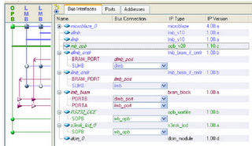

Electronics freak, hardware tinkerer, movie buff, android lover and blogger
LCD as General Purpose IO using Microblaze softcore processor
The MicroBlaze is a soft processor core designed for Xilinx FPGAs from Xilinx. As a soft-core processor, MicroBlaze is implemented entirely in the general-purpose memory and logic fabric of Xilinx FPGAs.(Source: Wikipedia) We had EDK 10.1 (Embedded Development Kit) installed in our lab PC and hence we used the Microblaze to write a LCD GPIO. GPIO means General Purpose Input Output. The Spartan 3E kit has various GPIO’s like Switches, LEDs, RS232, etc. But the LCD attached to FPGA wasn’t in the list of recognized GPIO by EDK.
Hence we wrote a custom code to include LCD as a part of GPIO. We used the OPB bus i.e. On-chip Peripheral Bus. Though we wanted to do more about it, we didn’t have enough time for it as submission deadline was near. Initially we wanted to use the Xilinx LWIP (Light Weight IP) library and make a network communication and to send a packet between the FPGA and PC using Ethernet. But we had some technical difficult and hence we couldn’t do that thing.
This project was small but it taught me how to use an EDK, how to use Microblaze and its architecture. Involved use of FPGA along with Microblaze softcore processor.
